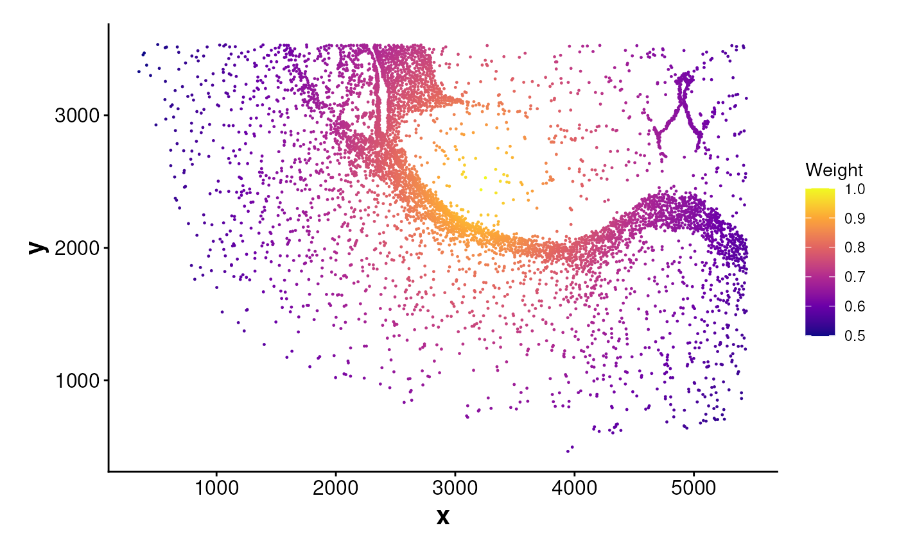
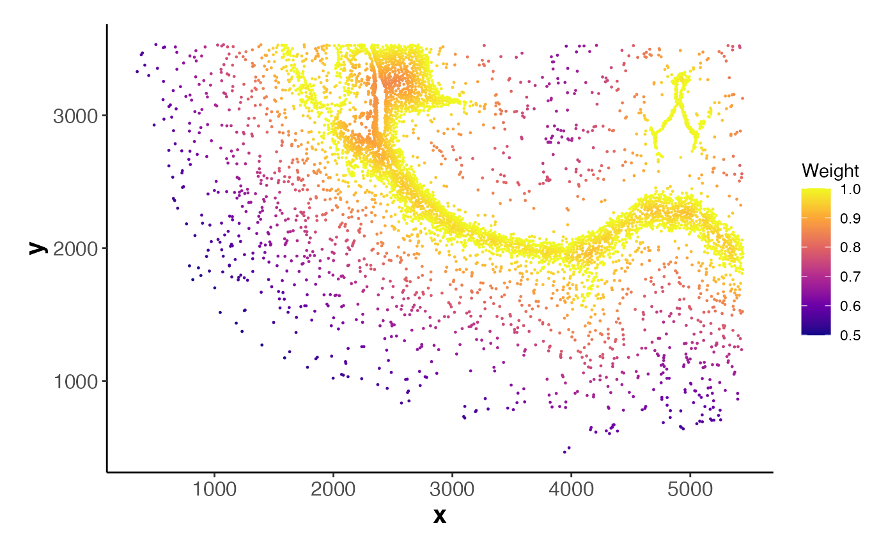

Visualizes spatial weights by plotting cell coordinates colored by
a numeric weight value.
Only cells in data that match the names in weights will be included.
This is useful for visualizing spatial trends such as proximity to
boundaries or centroids.
Usage
PlotWeights(
data = NULL,
weights = NULL,
point_size = 0.2,
theme_ggplot = my_theme_ggplot()
)Arguments
- data
A data frame or Seurat object containing spatial coordinates. Must include columns:
cell,x, andy.- weights
A named numeric vector of spatial weights, with cell IDs as names.
- point_size
Numeric. Point size of the cells in the plot. Default is
0.2.- theme_ggplot
A ggplot2 theme object. Default is
my_theme_ggplot().
Examples
# Load coordinate data
coords <- readRDS(system.file("extdata", "MouseBrainCoords.rds",
package = "SpNeigh"
))
# Cells in cluster 2
cells_c2 <- subset(coords, cluster == 2)[, "cell"]
# Compute centroid weights and plot
weights_cen <- ComputeCentroidWeights(data = coords, cell_ids = cells_c2)
PlotWeights(data = coords, weights = weights_cen)

# Compute boundary weights and plot
boundary_points <- GetBoundary(data = coords, one_cluster = 2)
weights_bon <- ComputeBoundaryWeights(
data = coords, cell_ids = cells_c2,
boundary = boundary_points
)
PlotWeights(data = coords, weights = weights_bon)
